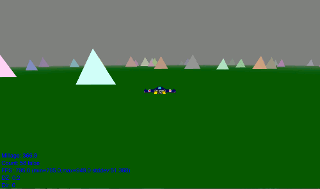
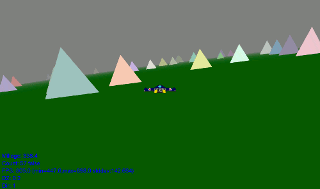
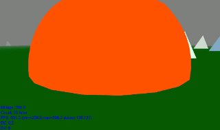
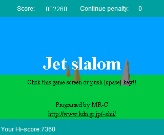
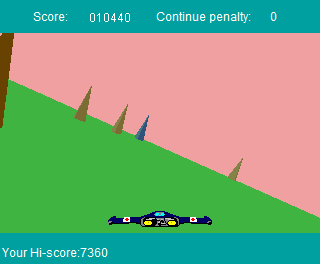
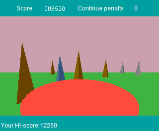

I use to love playing a java applet game called Jet Slalom. I chose to make a small game inspired by it while tinkering with WebGL. The original game had more substance, but is no longer available.



Screenshots of my WebGL homage version. Written in javascript and WebGL. Play it now!



Screenshots of the original Jet Slalom. Written by C ("C" is not C language) in 1997.